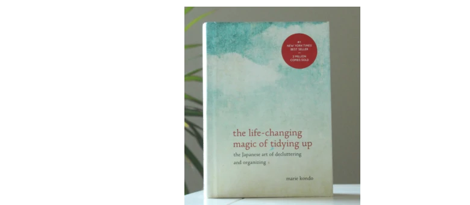

The Life-Changing Magic of Tidying Up
By Marie Kondo. A revolutionary approach to decluttering your home and your life.
The 7 Habits of Highly Effective People
By Stephen R. Covey. A framework for personal and professional effectiveness.
Podcasts
The Productivity Show
Description:
This podcast focuses on how to be more productive and manage your time better. It offers practical tips and strategies that you can apply in your daily life.
The Mindset Mentor
Description:
This podcast focuses on helping listeners change their mindset to achieve their goals and live a more fulfilling life. It includes tips on habits, motivation and self-improvement.
The Tim Ferriss Show
Description:
Tim Ferriss interviews experts from various fields, exploring their routines and habits that lead to success. This podcast covers a wide range of topics related to self-improvement.